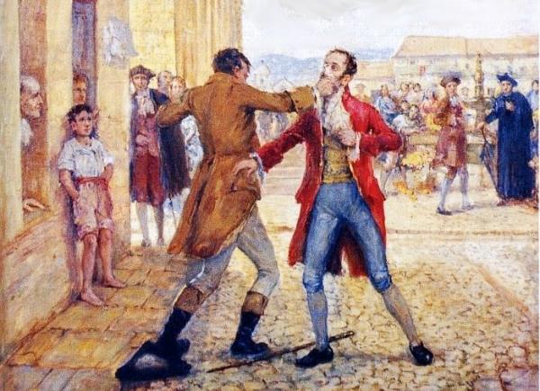
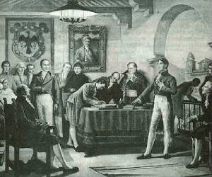

El nombre de “Patria Boba” fue introducido por Antonio Nariño para referirse de manera irónica al período comprendido entre la declaración de Independencia (julio de 1810) y el comienzo de la reconquista española por Pablo Morillo (1815).
Nariño utilizó este epíteto en un periódico redactado por él mismo y llamado Los toros de Fucha, que publicó en Bogotá para defenderse de los ataques por la prensa que le dirigían su enemigos políticos, encabezados por el general Francisco de Paula Santander.

CAUSA Y CONSECUENCIA
La principal causa parte de una disputa interna entre los Federalistas y los Centralistas, y la principal consecuencia es la inestabilidad de la nación, ya que la independencia no había sido consolidada. Existían varias juntas de gobierno, pero posteriormente Simón Bolívar logra un proyecto que unificó a la nación.

¿Porque hubó una batalla entre los Federalistas y Centralistas?
Debido al carácter centralista de la constitución de Cundinamarca (nombre que recibió la provincia de Santa Fe de Bogotá), los federalistas eran recelosos de la unión de este Estado a la Federación.